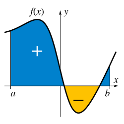

Materie Scientifiche
Gli argomenti principali che ho approfondito nel mio percorso tecnico
Servizi Web e API
La comunicazione tra applicazioni su Internet
Per informatica ho scelto i Servizi Web, che sono il vero "motore" di Internet perché permettono ad applicazioni diverse di comunicare tra loro scambiandosi dati in tempo reale. Un esempio pratico è l'app del meteo sul nostro telefono, che non ha le temperature salvate al suo interno ma le richiede istantaneamente a un server esterno. È un argomento che mi ha fatto capire davvero come funziona il "dietro le quinte" delle app che usiamo tutti i giorni.
VPN (Virtual Private Network)
Sicurezza e privacy nelle comunicazioni di rete
In questa materia ho deciso di portare le VPN, una tecnologia che crea una sorta di "tunnel" sicuro e crittografato per far viaggiare i nostri dati su Internet. È uno strumento ormai indispensabile sia per proteggere la nostra privacy quando ci colleghiamo a reti pubbliche, sia per le aziende che fanno lavorare i dipendenti da casa. Mi è sembrato un tema utilissimo e soprattutto super attuale.
Sviluppo Mobile
Android Studio e il Sistema Operativo Android
Per TPSIT mi sono concentrata sullo sviluppo mobile, studiando il sistema operativo Android e imparando a usare l'ambiente di programmazione Android Studio. È stato uno degli argomenti più stimolanti dell'anno perché mi ha permesso di unire la teoria alla pratica, progettando l'interfaccia e scrivendo il codice di una vera app. Vedere il proprio lavoro prendere vita sullo schermo di uno smartphone dà una grandissima soddisfazione.
Intelligenza Artificiale
Il Deep Learning e le Reti Neurali
Infine, ho voluto inserire il Deep Learning, un ramo dell'Intelligenza Artificiale basato sulle reti neurali che si ispirano al funzionamento del cervello umano. Invece di seguire regole rigide scritte da un programmatore, questi sistemi imparano da soli analizzando enormi quantità di dati, proprio come facciamo noi con l'esperienza. È la tecnologia che fa funzionare strumenti come ChatGPT o il riconoscimento facciale, e rappresenta sicuramente il futuro del nostro settore.
GPOI
L'Organizzazione Aziendale
In GPOI abbiamo studiato come è strutturata un'azienda e come funzionano i vari modelli organizzativi al suo interno. È una materia utilissima perché ti fa capire le dinamiche del mondo del lavoro e come vengono gestiti i progetti in team. Soprattutto per noi che usciamo da informatica, comprendere l'organizzazione di un'impresa è essenziale per sapersi inserire bene e capire il proprio ruolo in un futuro ambiente lavorativo.

Matematica
Il calcolo degli Integrali
In matematica ho deciso di portare il calcolo degli integrali. All'inizio può sembrare un concetto molto astratto e difficile, ma in realtà è uno strumento potentissimo per calcolare aree, volumi e risolvere problemi del mondo reale. Mi è piaciuto molto capire come questa formula sia alla base di tantissime applicazioni pratiche in fisica, in ingegneria e nell'informatica, dimostrando che la matematica serve davvero a descrivere e misurare la realtà.